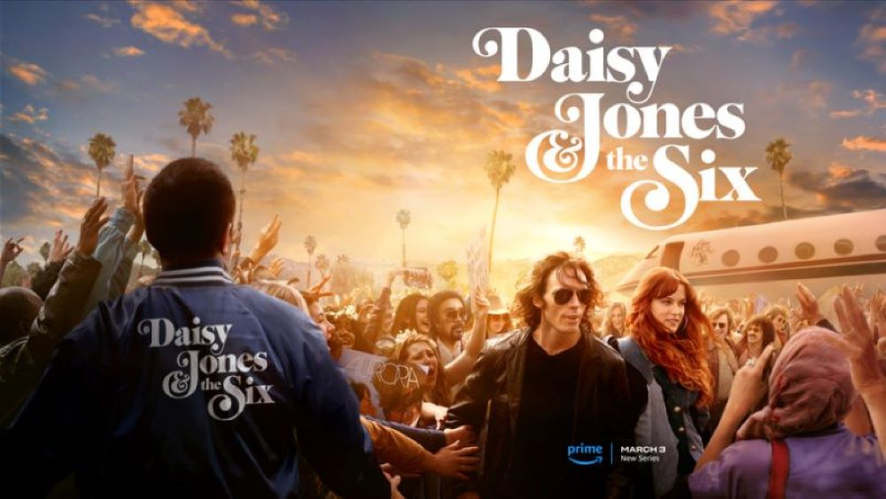

Daisy Jones & The Six
Watch the TV Series on Prime Video!
The Martian
Watch the movie on Disney+!
World War Z
Watch the movie on Netflix!

It: Chapter 1
Watch the movie on Netflix!
Watch the TV Series on Prime Video!
Watch the movie on Disney+!
Watch the movie on Netflix!
Watch the movie on Netflix!

Max Brooks chronicles the devastating Zombie War, recounting first-hand experiences of survivors worldwide, from decimated cities to remote landscapes. Through personal testimonies, he captures the profound fear, horror, and enduring spirit of resistance that defined humanity's struggle against the undead. The narrative spans from the origins in New Dachang, China, to the Redeker Plan in Southern Africa, offering a comprehensive and chilling account of the epochal event.
Want to read
Astronaut Mark Watney, left for dead on Mars after a dust storm, battles isolation and limited resources while his crew believes he perished. With ingenuity, engineering skills, and an unwavering determination, Watney confronts numerous challenges to survive against impossible odds. The gripping narrative explores his relentless fight for survival and resilience in the face of overwhelming challenges.
Want to read
In the dystopian year 2044, teenager Wade Watts escapes the bleak reality by immersing himself in the virtual utopia of the OASIS. His life takes a perilous turn when he discovers a clue in the digital realm, triggering a ruthless competition where players are willing to kill for the ultimate prize tied to the creator's pop culture obsession. As Wade races to survive, the narrative explores the intersection of virtual and real worlds, confronting his desperate desire to escape reality.
Want to read
In "Doctor Sleep," Dan Torrance, haunted by his traumatic past at the Overlook Hotel, grapples with his psychic abilities, now employed in comforting the dying. The True Knot, a quasi-immortal tribe, preys on children with the "shining," driving a battle between good and evil. The narrative unfolds as Dan, now "Doctor Sleep," must protect a young girl named Abra Stone with an exceptionally powerful shining from the malevolent forces that seek to exploit her gift.
Want to read
For twelve thousand years the Galactic Empire has ruled supreme. Now it is dying. But only Hari Seldon, creator of the revolutionary science of psychohistory, can see into the future--to a dark age of ignorance, barbarism, and warfare that will last thirty thousand years. To preserve knowledge and save humankind, Seldon gathers the best minds in the Empire--both scientists and scholars--and brings them to a bleak planet at the edge of the galaxy to serve as a beacon of hope for future generations. He calls his sanctuary the Foundation.
Want to read
Daisy, a young woman in 1960s L.A., immerses herself in the rock 'n' roll scene, craving fame and a chance to perform at the Whisky a Go Go. The novel unfolds as an oral history, detailing the rise of The Six, a band led by brooding Billy Dunne, whose tumultuous journey intersects with Daisy's, resulting in a legendary collaboration and a vivid portrayal of the '70s music scene by Taylor Jenkins Reid.
Want to read
In Derry, Maine, a group of seven friends faced a haunting horror as teenagers. Now successful adults, they are compelled to return to confront an enduring nightmare and an unnamed evil that still plagues their hometown. The force that binds them reveals an unrelenting and unsolved menace.
Want to read
It is the story of four seekers who arrive at a notoriously unfriendly pile called Hill House: Dr. Montague, an occult scholar looking for solid evidence of a "haunting"; Theodora, the lighthearted assistant; Eleanor, a friendless, fragile young woman well acquainted with poltergeists; and Luke, the future heir of Hill House. At first, their stay seems destined to be merely a spooky encounter with inexplicable phenomena. But Hill House is gathering its powers—and soon it will choose one of them to make its own.
Want to read